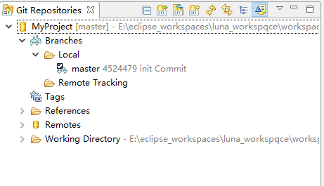
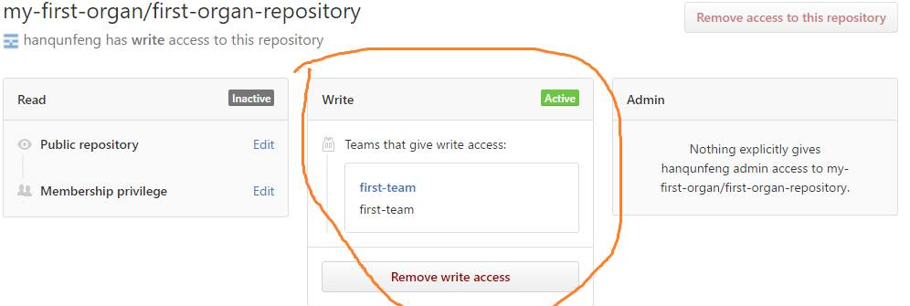

1.抓取远程项目：git clone https://git.coding.net/hanqunfeng/love.git
2.修改文件后提交到缓冲区：git add . #.表示全部文件
3.提交到本地仓库：git commit -m "do something"
4.提交到远程仓库：git push origin master # origin是远程branch名称，master是本地branch名称
5.查看git配置：git config --list # 在当前项目目录下运行，可以查询远程仓库branch名称
一、准备工作
1、注册github账号需要验证邮箱
2.创建仓库
1）下图中，两处New repository都可以新建仓库。

2）输入仓库名称，其它配置不需要修改，点击Create repository。

3）仓库创建成功后复制仓库地址备用。

二、eclipse--git使用
1、目前Kepler（4.3）以后的版本都自带EGit插件，打开eclipse，Window->Preference->Team->Git->Configuration->User Settings，
点击Add Entry，创建两对key/value，key为user.name和user.email，value分别为github账号的name和email，这样提交代码后，就可以在github的仓库里看到操作人信息了。其实不是github的账号也可以，只不过提交后github页面中会提示该用户没有激活。Location属性不需要修改。
2.发布项目到Github仓库
1）在eclipse中新建一个Java Project，右键点击项目-->Team-->Share project-->Git-->next，并勾选“Use or create repository in parent folder of project”

2）点击1处，再点击2处，之后点击Finish


3）此时项目效果如下，还并没有上传到github中
4）右击项目，Team->Add to Index ，此时看到问号变成了加号

5）右击项目，Team->Commit，填写Commit message，点击Commit，此时也并没有将项目发布到远程github仓库中，只是提交到本地仓库。如果希望提交到本地仓库并同时发布到github，可以点击Commit and Push。因为是第一次提交项目，所以此处可以点击Commit and Push。如果此时只点击Commit，则之后需要右击项目->Team->Remote->Push...。

6）将github上创建的仓库地址粘贴到此处，其它信息会自动带出，但要注意用户名和密码，点击next--next--finish。


7）此时会将项目发布到远程github中，发布成功点击OK。此时登录github查看仓库，会发现项目已经上传成功。


8）在eclipse中打开Git Repositories窗口，Window->Show View->Other->Git->Git Repositories，打开窗口时即可看到刚上传的项目已经在里面了

9）Branches下的Local代表本地仓库，Remote Tracking代表远程仓库，此时看到Remote Tracking中没有内容，可以在仓库上右击->Pull，即可将远程仓库的索引抓取下来，此时看到本地仓库和远程仓库的版本号一致。

3.从Github仓库中取得项目
1）在eclipse中打开Git Repositories窗口，点击Clone a Git Repository，如图所示。

2）将仓库地址粘贴到URI，填写用户名密码，注意这里仓库的URI是其他人创建的仓库，但是用户可以是我自己的github用户，因为这个仓库是public的，但是这样只能下载代码，却不能提交代码，因为没有为此用户开放发布权限，下文介绍。

3）可以看到该仓库有两个branch，除了master的branch外，还有一个branch01的branch。branch下文介绍。

4）修改Directory，这是项目保存在本地的位置

5）此时查看Git Repositories窗口，发现远程仓库已经被加入进来，此时项目已经被存储到本地。
6）可以使用ImportI将项目加载到eclipse里，Import->Git->Projects from Git，Next


4.提交与更新项目
1）比如项目中创建了一个class，此时会在新增的class前显示个小问号
2）右击项目，Team->Add to Index，会将所有新文件打上索引，此时问号就都变成加号了（如果是已经加入过库的文件，则会是黑底的*图标），表示可以提交了，之后再次右击项目->Team->Commit，填写备注后点击Commit（提交到本地仓库），或者Commit and Push（发布到远程仓库）。
注意：一般如果只是自己负责的文件，可以选择直接点击Commit and Push按钮，但是如果是多个人都会维护的文件，就不建议这种方式了，因为有可能发生版本冲突，所以推荐先点击Commit，然后执行更新操作，解决冲突后再执行push，右击项目->Team->Remote->Push...。


或者，直接点击“Add All Branches Spec”，加入所有branch上的更新

Next--Finish--OK，以下是发布成功的提示界面

如果发布时，提交的内容发生冲突，会提示如下界面，此时可以执行更新操作（见下文步骤3），对冲突代码处理后再提交

3）在提交代码前，先更新项目到最新版，右击项目->Team->Pull，此时如果有冲突，会显示如下界面，可以看到本地库和远程库版本不一致，点击OK，之后手工对冲突进行处理，冲突处理完成后可以重新发起提交，执行2）中的步骤。


冲突代码效果图示例：

4）上面的代码查看起来并不是很直观，所以处理冲突时，可以右击有冲突的文件（红色标识）->Team->Merge Tool，方便对比本地（左侧）和远程文件（右侧）的差异，可以直接修改左侧的文件。
5）冲突处理完成后，右击项目->Team-Add to Index的效果，黑底的*图标，之后再执行Commit操作将代码发布到github即可。

三、团队合作之多人协作
上面已经提到，如果多个人维护同一个仓库时，需要使用创建仓库用户的账号信息，否则只能下载，不能提交发布，一般可以通过创建一个公共账号解决。
最好的方式还是通过创建组织的方式来实现。
1.组织管理
1）创建组织
2）邀请用户

3）被邀请的用户会收到邀请邮件，点击下方按钮登录会要求登录github

登录github后再次点击join按钮才会完成加入组织

2.创建组织内仓库
1）组织内创建仓库与单独创建一个仓库方法相同，不再赘述。
2）修改仓库权限
默认情况下，除了组织管理员，组织内的其他成员也可以创建仓库，但是对仓库只有read权限，可以修改这个默认值
点击上图中的Settings->Member privileges

说明：上面的配置基本可以满足多人协作了，但是这样做会导致组织内的成员对组织内的所有仓库都有相同的权限，这样不便于多个团队，多个项目的管理，所以一般情况下并不会修改组织的默认权限，而是使用Team。
3.创建Team
1）Team可以被授予权限，可以将成员加入Team。


2）为Team添加成员
3）为Team授予仓库的管理权限


说明：一个组织内可以有多个Team和多个仓库，但是组织内的Team和仓库只能属于一个组织。
4）查看组织内成员的权限

可以看到是拥有team的write权限

如果是组织中授予的write权限，效果如下
四、Branch管理
branch就是项目分支，默认情况下，仓库中只有一个branch，就是master。
我们可以把branch想象成一棵树，那么master就是树的主干，如果我们一直在master上发布代码，那么这颗树就会像一根棍子一样，如果我们为master创建了一个branch，那么这棵树就多了一个树枝。而此时的这个branch，就是master的一个clone。
我们可以继续在master上发布新的代码，也可以在这个新的branch上发布代码，branch可以被merge到master中，merge的过程就是合并代码的过程。
事实上，任何一个branch，包括master，都可以被创建新的branch。
1）我们为什么要使用branch？
a.有多套环境，比如开发、测试、生产，等等，一套环境测试完成，然后merge到另一套环境进行测试；
b.项目已经发布，但还处于持续集成的阶段，这时如果只有一套master就比较不方便了，比如生产环境有个重要bug需要马上处理，但此时master上已经有新的代码被提交了；
通常情况下，a,b两种情况是交织在一起的，所以使用branch还是有必要的。
2）创建branch
打开Git Repositories窗口，在Local的master上右击->Create Branch

填写branch名称，默认勾选“checkout new branch”，表示将本地内容切换为新的branch
此时看到新的barnch已经创建，并且原先在master上的对号现在已经在新的branch上了

此时查看项目，发现项目的标识也切换为新的branch了

此时再提交代码，只会改变branch，而不会影响master了。
3）发布本地branch到远程github
在Git Repositories窗口中，右击新创建的本地branch->Push Branch..

branch发布成功后，可以在Git Repositories窗口的Remote Tracking中查看到

此时就可以像使用master发布代码一样，在新的branch中发布代码了。
4）合并branch到master
在Git Repositories窗口中，双击Local中的master，将本地代码切换到master，然后右击项目->Team->Pull，先执行更新操作，保证master上的代码是最新版本，
之后右击项目->Team->Merge

双击"my-branch01"，或者鼠标选中它，然后点击下面的Merge按钮

此时会将branch中的内容加入到当前项目中，此时右击项目->Team->Remote->Push，就是正常的发布流程，这样就可以将新的branch合并到远程的master中了。
5）删除branch
本地不再使用的branch可以删除，但是删除时其不能处于使用状态，也就是不能有那个小对号。
远程branch可以随时被删除，删除后可以从本地重新发布。
6）发布到github中的branch，其它人可以通过在Git Repositories窗口中，右击仓库->Pull，来刷新查看。
五、Jenkins与Git
1.在Jenkins中需要安装Git plugin插件，安装插件不在赘述。
2.安装好git插件后，进入系统管理->系统设置，找到Git plugin配置项，填写user.name和user.email的值，这里就填一个已有的github账号。
3.系统中要先安装好git，以ubuntu为例，sudo apt-get install git-core，其它平台安装git的方法自行百度吧。
4.在jenkins中新建一个自由风格的项目，源码管理中选择Git，Repository URL中添加仓库地址，如果仓库是public的，可以不用配置Credentials，私有库需要使用add创建一个用户名密码的认证信息，如果只是下载使用一个能read的账号就行。Branches to build中默认为*/master，表示下载主干，如果想下载其它branch，就把master换成其它branch名称即可。
5.此时可以点击立即构建，查看是否可以下载成功。